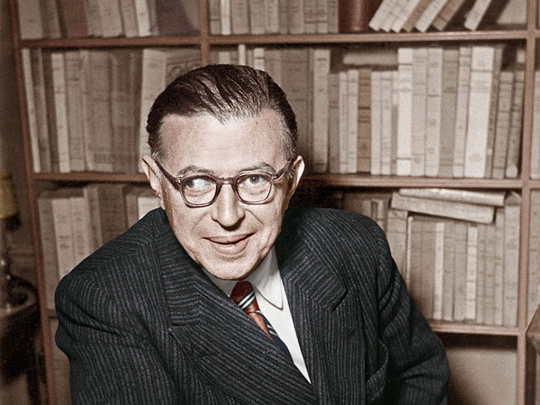

„Човек е осъден да бъде свободен.“
На френски: „L'homme est condamné à être libre.“
-Жан-Пол Сартр
Според Сартр „съществуването предшества същността“.
Човек първо се появява в света (хвърлен е в него), а едва след това чрез своите избори определя какъв е.
На 19.11 се отбелязва Световният ден на философията.
В чест на този ден чрез QR кодове можете да откриете 20 различни философски цитата за деня.
